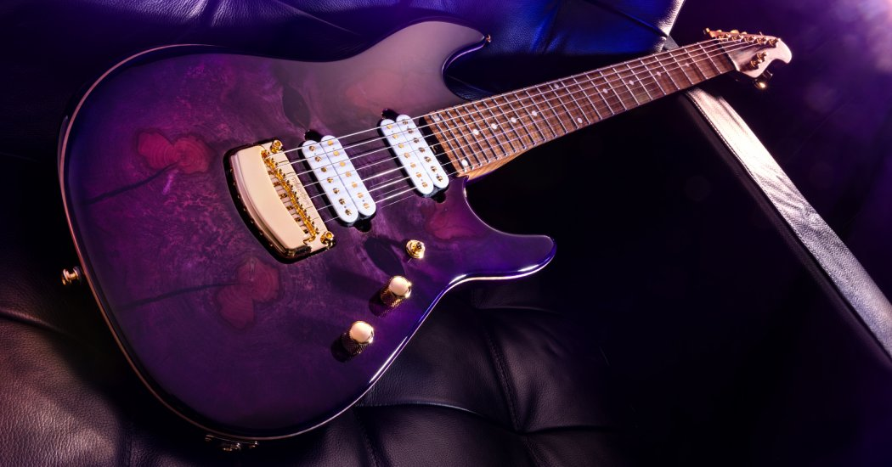
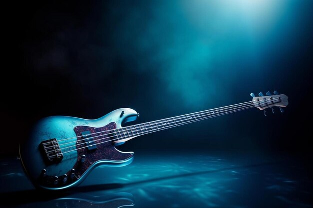
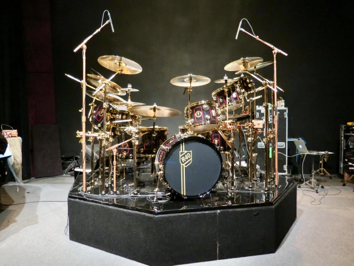

Picking Your Style
Starting a band is exciting thing! To start a band you need to know what kind of band you want to start. There are many styles of music you can play in a band:
- Rock Band
- Country Band
- Blues Band
- Folk Band
- Bluegrass Band
- Jazz Band
- Punk Band
- Metal Band
- Funk Band
- And Many More!!
Choosing An Instrument
Once you've found a genre that suits you, it's time to choose which Instrument you'd like to play. There is no wrong answer when choosing an instrument. Many of them are used in most if not all genres of music!
-
Guitar:
One of the most popular instruments in modern music, both acoustic and electric, it's a great choice as an instrument! Guitar mostly plays the melody in a lot of genres and is played by hundreds of millions of musicians. That being said, there's a lot of competition. You'll find that guitarist are "a dime a dozen". It's hard to start a band when everyone plays guitar. -
Bass:
Another incredibly popular instrument, the bass guitar is the lower alternative to the guitar. The Bass plays the counter melody in a lot of music and is considered part of the rhythm section. The bass is by far one of the most prominent in music, as there are very few genres that don't need or use a bass. Bass players, unlike guitarists, are a lot harder to come by. Bassists are known to be in multiple bands at once at the local level out of sheer necesities. If your goal is to play music as soon and as often as possible, maybe the Bass is the one for you! -
Drums:
The Drums are considered to be the first instrument humans ever played! Initially using just sticks and animal skins, early civilizations used to sit together and sing, play drums, and dance. Now one of the main proponents of almost every song, the drums is an integral part of music yesterday and today. The drummers job is extremely important. They maintain the time for the whole group, ensuring everyone stays together. Drums is a physically demanding, but rewarding instrument!
Finding Other Members
Once you've learned the basics of your instrument, it's finally time to play music with other people! But where do you find musicians? This can be one of the hardest parts. Luckily, modern technology has made it easier than ever to find other musicians. Check to see if there are Facebook or Reddit groups filled with musicians in your area. If you prefer a more in-person approach, consider going to open mics and chatting with the people playing. There are always musicians looking for someone like you to join them in playing music! Don't get discouraged if you can't find someone immediately.